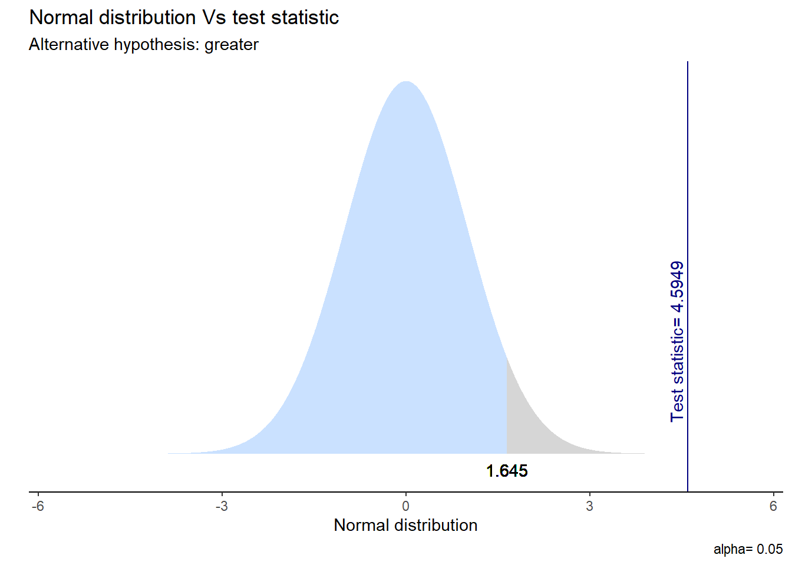
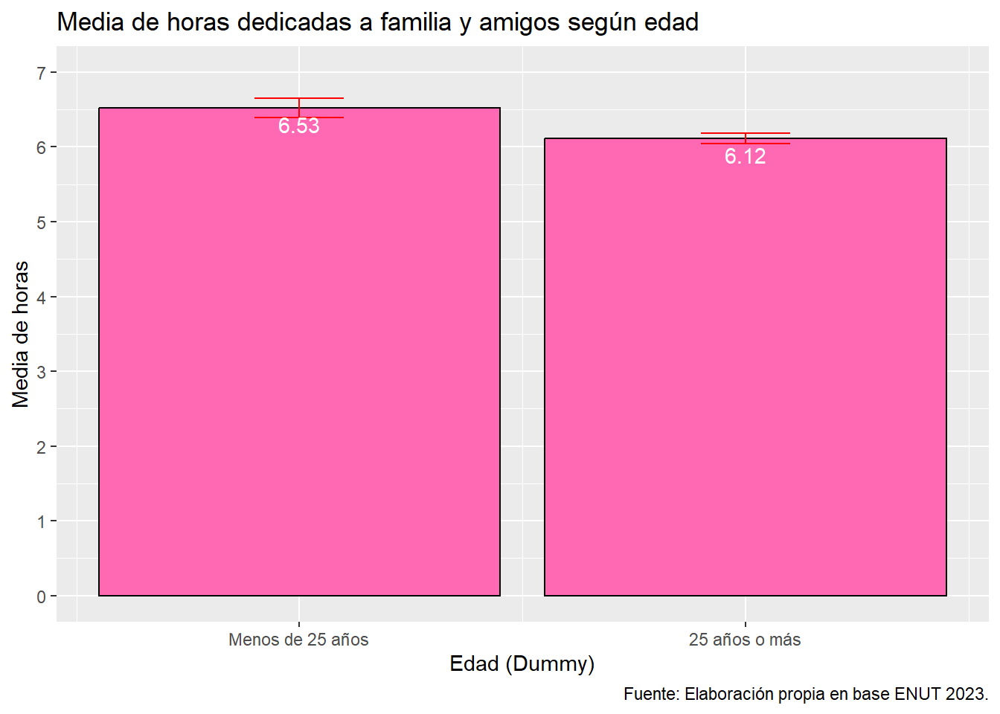
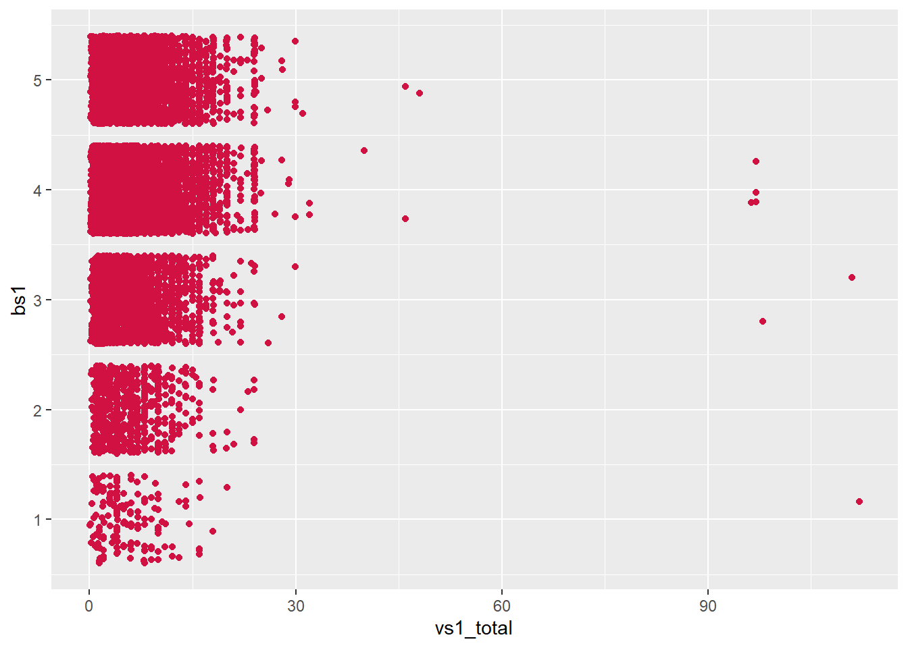

Hombre Mujer
7158 9399 4 Análisis
4.1 Análisis Descriptivo
Variable Sexo
Al analizar la variable “Sexo” , se observa una clara predominancia femenina, quienes siendo 9399, representan el 56,77% del total de los casos, superando a los hombres quienes, siendo un total de 7.158, conforman el 43,23% de lal muestra. Esta diferencia de 13,54% indica que, dentro del grupo de encuestados existe una tendencia marcada de feminización en la participación.
Variable Edad
Min. 1st Qu. Median Mean 3rd Qu. Max.
12.0 27.0 43.0 43.7 59.0 100.0 [1] 19.38362En lo que respecta a la variable “Edad”, y quitando los “NA” o casos perdidos, la tabla muestra la edad mínima y máxima de los encuestados, logrando vislumbrar una distribución simétrica entre la media y la mediana. Dado que se encuentran en los valores 43,0 y 43,7 respectivamente, sugiere que la muestra se encuentra equilibrada en individuos que rondan en la adultez media, indicando así que los resultados no muestran sesgos fuertes hacia los grupos extremos de las edades, ya sean más jóvenes o de mayor rango etario. En cuanto a la dispersión de los datos, la desviación estándar es de 19,38, revelando la existencia de una alta heterogeneidad etaria, indicando que la ENUT logra abarcar diferentes etapas para su estudio y resultados de mayor representatividad. También, al hacer el análisis de cuartiles se logra identificar que el 50% de la población se encuentra entre los 27 y 59 años de edad. Haciendo referencia a una población laboralmente activa y el primer cuartil indicando que el 25% de la muestra se encuentra entre los 12 a 27 años, permitiendo evidenciar que la encuesta abarca tanto adolescentes como jóvenes, cubriendo el ciclo vital de la encuesta, el cual busca abarcar desde una adolescencia temprana hasta individuos de edad o vejez avanzada (100 años). Todo esto con el fin de poder aportar un estudio que demuestre una representatividad efectiva.
Variable BS1: Grado de Satisfacción con vida en general
Totalmente insatisfecho Insatisfecho
158 672
Ni insatisfsfecho/a, ni satisfecho/a Satisfecho
2278 8551
Totalmente satisfecho
4898 La variable “BS1” mide el nivel de satisfacción de los participantes con respecto a su vida en general. Se logra observar que, de la totalidad del tamaño muestral, un total de 8.551 encuestados indica que se siente satisfecho con su vida, esto equivale a un 51,66% de la muestra. En el caso de los encuestados que afirman encontrarse totalmente satisfechos con su vida son un total de 4.898, conformando el 29,58% del total muestral. También se observa que un 5,01% de los encuestados afirman sentirse insatisfechos de manera parcial o total de su vida en general, esto equivale a la suma de los 158 y 672 encuestados que respondieron sentirse insatisfechos o totalmente insatisfechos. Esta diferencia refleja una marcada polarización positiva hacia los encuestados que se encuentran satisfechos con su vida, siendo la suma de los porcentajes de estos un 81.24% del total muestral. Estos resultados reflejan una baja dispersión de los datos hacia el extremo negativo (insatisfacción con la vida), dado que la concentración de los datos se encuentra en los dos niveles más altos de satisfacción.
Variable VS1_total: Total de horas dedicadas a compartir con familiares, pareja o amigos a la semana.
Min. 1st Qu. Median Mean 3rd Qu. Max.
0.03333 3.00000 5.00000 6.19945 8.00000 112.00000 [1] 4.782255Para finalizar, al analizar la variable “VS1_total”, la cual hace referencia al tiempo libre dedicado durante la semana por los individuos encuestados, da cuenta de una asimetría positiva en la distribución de los datos, indicando que la norma, en este caso, es dedicar poco tiempo a la semana a tiempos de sociabilización y recreación, pero la existencia de un grupo minoritario que le dedica un tiempo excesivo a estas actividades hace que la cola de la muestra se extienda hacia la derecha. El promedio dedicado a este tipo de actividades es de 6,20 horas semanales, siendo esta cifra superior a la mediana, la cual tiene un valor de 5,00 horas semanales. Aquí se distinguen dos grupos; la tendencia que se encuentra en horas moderadas dedicadas a actividades de recreación (entre 40 a 45 minutos diarios en una semana) y otro grupo minoritario que le dedica cantidades excesivamente altas de tiempo semanalmente a estas actividades, de esta manera elevando el valor del promedio. Con respecto a la dispersión, se observa que el 50% dedica entre 3,00 a 8,00 horas de actividades de ocio y/o recreación. Esto sugiere la existencia de un patrón homogéneo de socialización, el cual hace referencia que este grupo mayoritario dedica poco o muy poco tiempo en la semana a dichas actividades de tiempo libre, esto probablemente restringido por otro tipo de cargas, ya sea laborales o de cuidado. Contrario a los casos extremos, los cuales dedican 112 horas semanales a estas actividades, es decir, 16 horas diarias aproximadamente quienes, se asume, cumplen con un perfil de individuos con alta disponibilidad, esto pudiéndose dar por diferentes razones. Respecto a la desviación estándar, esta se encuentra en un valor de 4,78, siendo proporcionalmente alta respecto a la media y permitiendo evaluar la existencia de diferentes tiempos de ocio. Esto refleja la diversidad de estilos de vida de los encuestados por la ENUT.
4.2 Análisis Bivariado
Esta sección presenta los análisis bivariados realizados para comprobar las hipótesis de la investigación. Al realizar este análisis se consideró la estimación de coeficientes de correlación y medidas de asociación para variables, de esta manera se realizaron pruebas de hipótesis estadísticas y también se consideró el tamaño del efecto en función del nivel de medición de las variables. Por último, se establece un nivel de significancia de p < .05 para todas las pruebas.
4.2.1 Hipótesis de diferencias
Frente a la siguiente hipótesis: “Se espera que exista una diferencia entre los promedios de horas dedicadas a compartir con familia y amigos entre hombres y mujeres.” Y su respectiva Hipótesis Nula (H0): “No existen diferencias significativas entre los promedios de las horas dedicadas a compartir con familia y amigos entre hombres y mujeres.” es necesario analizar las diferencias en horas dedicadas a compartir con familia y amigos según sexo. Para este procedimiento se utiliza como variable dependiente numérica “horas de compartir” y como independiente dicotómica “sexo”, para posteriormente realizar una prueba de t de Student para verificar la hipótesis. La prueba t de Student de dos colas arrojó un valor t = -2.24 con 16,555 DF (grados de libertad), resultando en un valor p = .025*. Puesto que p < .05, rechazándose la hipótesis nula (H0) (Ver Tabla 1). Esto concluye que existe una diferencia estadísticamente significativa en el promedio de horas dedicadas a compartir entre hombres y mujeres, respaldando la hipótesis de investigación. Luego, el intervalo de confianza del 95% para la diferencia de medias fue de [-0.32, -0.02], confirmando el contraste.
Method | Alternative | Mean 1 | Mean 2 | M1 - M2 | t | df | p | 95% CI |
|---|---|---|---|---|---|---|---|---|
Two Sample t-test | two.sided | 6.10 | 6.27 | -0.17 | -2.24 | 16,555 | .025* | [-0.32, -0.02] |
Gráfico prueba t

Gráfico

4.2.2 Hipótesis direccional
Respecto a la hipótesis direccional: “Se espera que la media de tiempo destinada a compartir con familia y amigos sea mayor en jóvenes de 0 a 25 años que en adultos de 25 años o más”, y su hipótesis nula (H0): “No hay diferencias mayores en la media de horas dedicadas a compartir con familia y amigos entre menores y mayores de 25 años”. Para el procedimiento se relacionaron las variables “horas de compartir” y la variable dicotómica “edad recodificada”. En este caso se empleó una prueba t de Welch unilateral, acorde a la direccionalidad establecida. Los resultados (ver Gráfico 2) arrojaron un valor t = 4.59 con 5,476.64 DF (grados de libertad) y un valor p < .001*** (Ver tabla 2). Debido a que p < .05 y considerando que la prueba fue direccional o “greater”, se rechaza la hipótesis nula (H0). Esto indica que la media de horas destinadas a compartir es significativamente mayor en el grupo más joven, lo que respalda la hipótesis direccional planteada. El intervalo de confianza del 95% para la diferencia de medias fue de [0.26, Inf], respaldando así la direccionalidad esperada.
Method | Alternative | Mean 1 | Mean 2 | M1 - M2 | t | df | p | 95% CI |
|---|---|---|---|---|---|---|---|---|
Welch Two Sample t-test | greater | 6.53 | 6.12 | 0.41 | 4.59 | 5,476.64 | < .001*** | [0.26, Inf] |
Gráfico prueba t

Gráfico

4.2.3 Hipótesis correlacional
Finalmente, para analizar la hipótesis: “Se espera que exista una correlación entre la cantidad de tiempo dedicada a compartir con familia y amigos y el sentimiento de bienestar general”, junto con su hipótesis nula (H0): “No existe una correlación significativa o directa entre la cantidad de tiempo dedicada a compartir con amigos y familia y el sentimiento de bienestar general”. Se analizó la relación entre dos variables numéricas mediante un coeficiente de correlación de Pearson. El diagrama de dispersión (ver Gráfico 3) permite visualizar la distribución de los datos, evidenciando una tendencia levemente ascendente que sugiere una correlación débil.
El coeficiente de Pearson fue r = 0.04. Aunque este valor representa una relación muy débil, el análisis arrojó un valor t = 4.69 con 16,555 grados de libertad y un valor p < .001***. Dado que p < .05, se rechaza la hipótesis nula (H0), concluyendo que existe una correlación positiva y estadísticamente significativa entre la cantidad de tiempo dedicado a compartir y el bienestar general.
No obstante, el tamaño del efecto es mínimo, ya que un valor r = 0.04 refleja que la relación entre las variables es mínima y que prácticamente no comparten variabilidad. Esto sugiere que, si hay un mayor tiempo de interacción social, se asocia con un leve aumento del bienestar subjetivo; pero la magnitud de esta asociación es reducida en la población analizada.
estimate | t | p | df | Method | Alternative | 95% CI |
|---|---|---|---|---|---|---|
0.04 | 4.69 | < .001*** | 16,555 | Pearson's product-moment correlation | two.sided | [0.02, 0.05] |

La discusión de los resultados permite confirmar las tres hipótesis planteadas, mostrando dinámicas relevantes en el uso del tiempo social. Primero, se evidencian diferencias significativas por género, sugiriendo que el sexo influye en los patrones de socialización, aunque la brecha promedio no es amplia. Segundo, la edad se torna el factor determinante: los jóvenes dedican significativamente más tiempo a compartir que los adultos, esto debido a las limitaciones asociadas a la vida laboral adulta. Finalmente, aunque se observa una relación positiva entre el tiempo dedicado a compartir y el bienestar, la correlación es muy débil, indicando que la satisfacción vital es un fenómeno multidimensional y que el tiempo de ocio explica sólo una fracción mínima de dicha variabilidad.